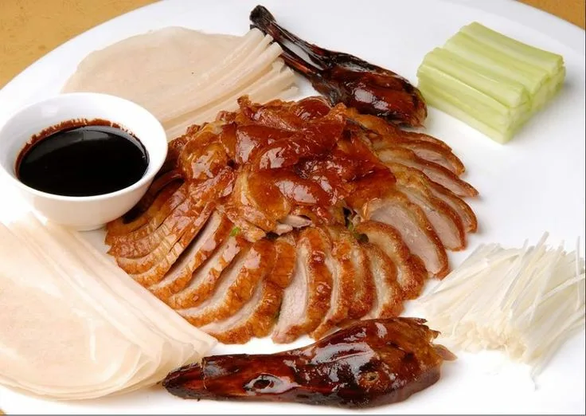
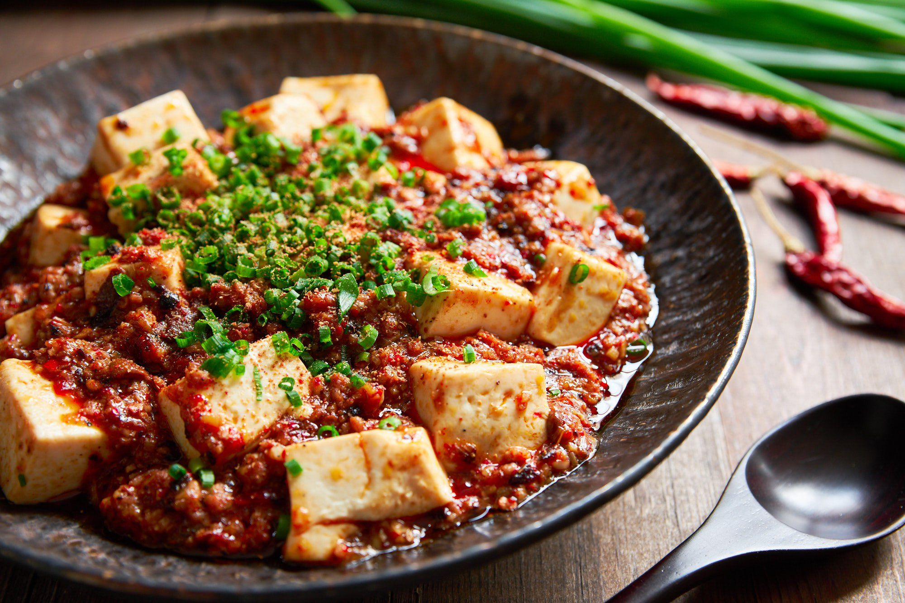

PEKING DUCK CRISPY N AROMATIC
Peking Duck is a famous Chinese dish known for its thin, crispy skin and tender meat, often served with pancakes, scallions, cucumber, and sweet bean sauce.

MA PO TOFU SPICY N SAVORY
Ma Po Tofu is a traditional Sichuan dish made with soft tofu set in a spicy chili and bean-based sauce, typically containing minced meat and Sichuan peppercorns.

SWEET SOUR PORK TANGY N CRUNCHY
Sweet and Sour Pork is a beloved Chinese dish featuring crispy fried pork pieces coated in a glossy sauce made from vinegar, sugar, and tomato ketchup, with bell peppers and pineapple.